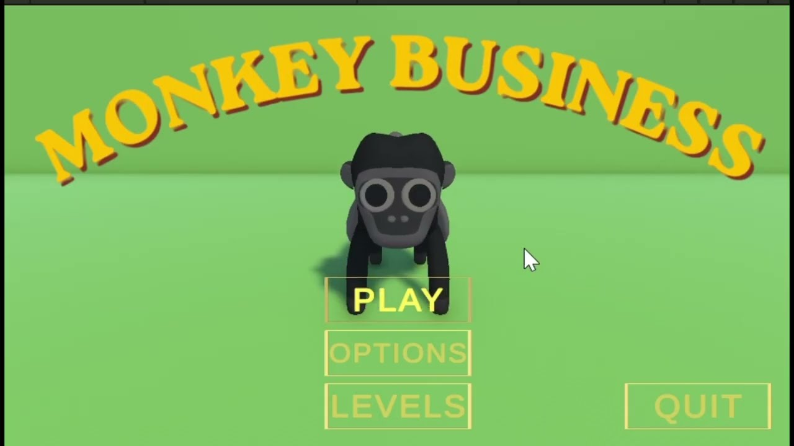

Monkey Business
Barrie-George Davies
01 · Unity · C#
Monkey Business
- Synopsis
- A third-person 3D platformer set on the savannah. Play as a monkey and race through three stages of jumps, moving platforms, collectables, checkpoints, and enemies. Collect bananas to raise your score, pick up extra lives when you can, and watch your stamina while sprinting. Patrols, a graph-patrolling boss, and shooting enemies try to knock you off course. Touch a checkpoint to save progress. Fall too far or run out of lives, and it is game over. Difficulty is chosen from the main menu before each run.
- Project brief
- A game development module requiring a complete 3D platformer: menus, difficulty, level flow, scoring, lives, checkpoints, and enemy behaviour, delivered as a playable build.
- Role and contribution
- Sole developer. I was the main programmer and 3D artist: gameplay systems, three levels, menus, difficulty, checkpoints, scoring, enemy logic, and the majority of the 3D modelling, including the player character.
- Tools
- Unity and C#.
